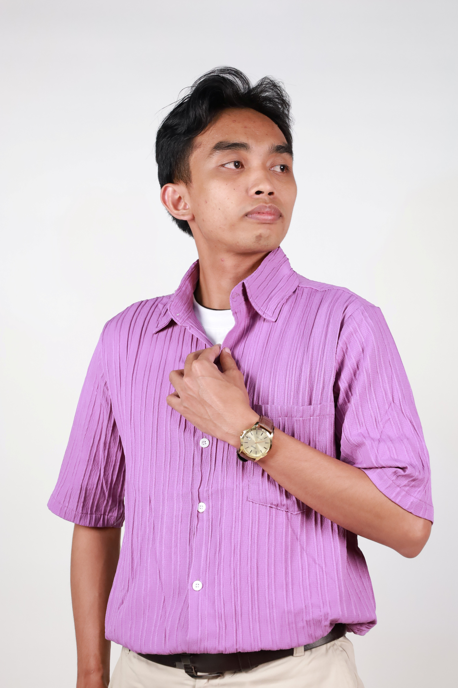
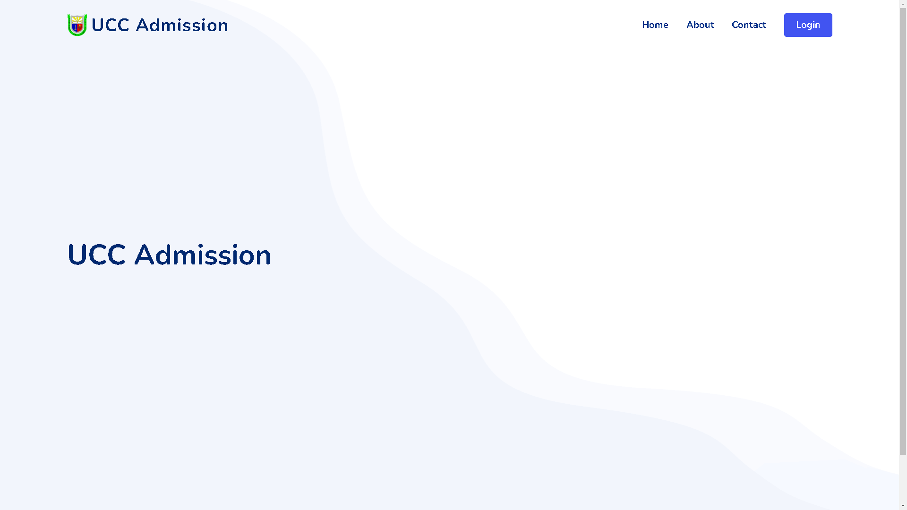
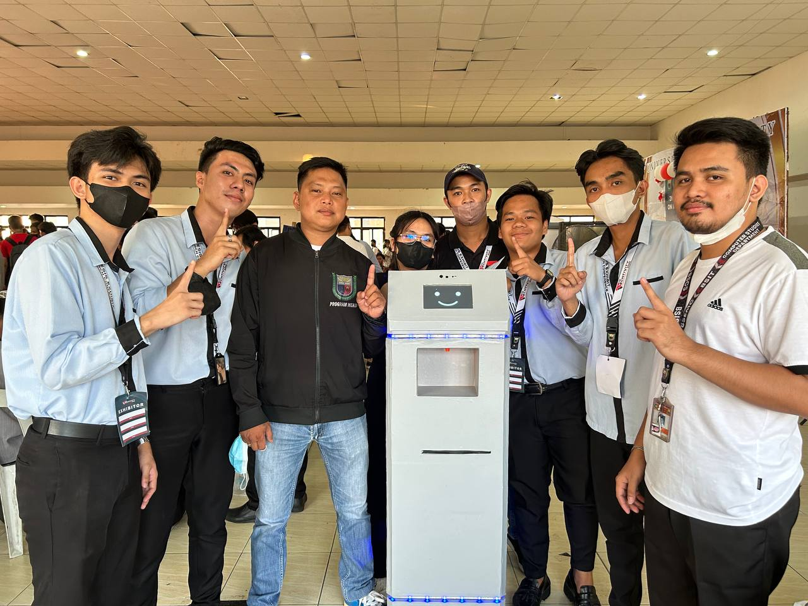
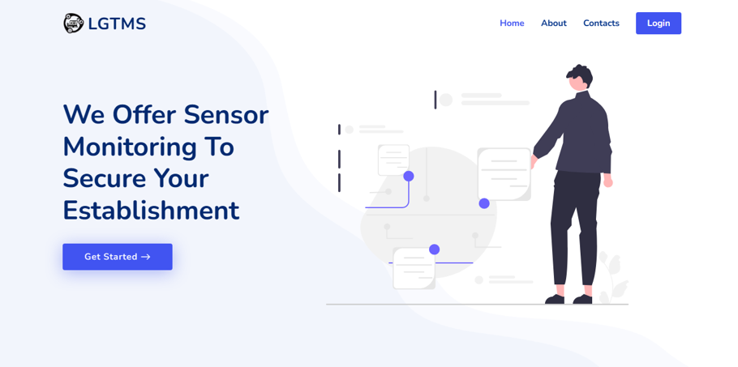
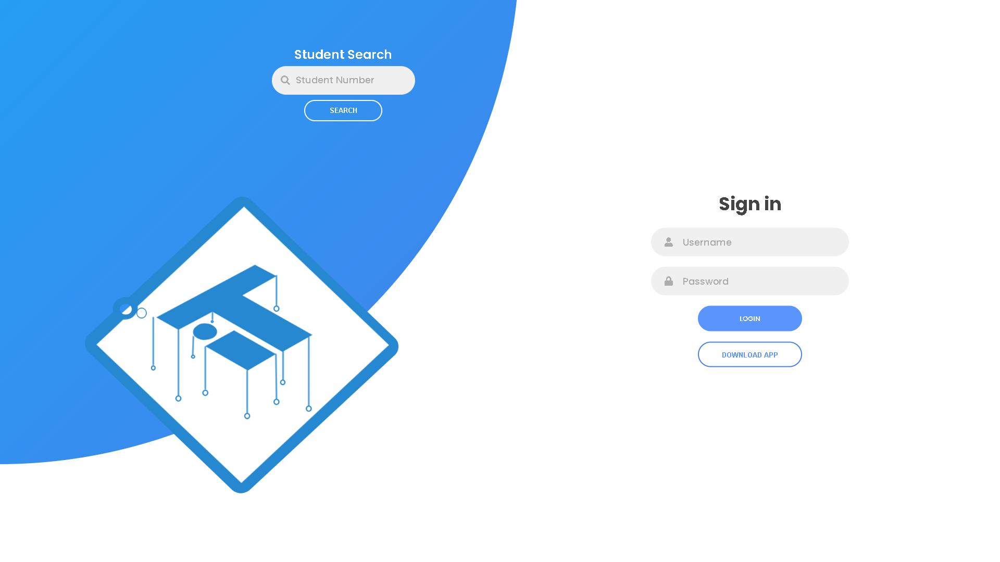

Languages
PHP · Java · JavaScript · HTML · CSS · SQL
I build practical web applications and explore how software, APIs, databases, and local AI can solve real-world problems. I enjoy learning by building—from business systems and payment integrations to personal AI tools.

A concise introduction to my background, interests, and approach to software development.
I am a Bachelor of Science in Computer Science graduate from the University of Caloocan City. My portfolio includes academic and practical projects involving web-based management systems, admissions workflows, monitoring systems, and robotics.
Recently, I have been expanding my work into native PHP integrations, payment checkout flows, and a personal AI assistant using Java, Spring Boot, and Ollama. I value maintainable code, useful features, and understanding how each part of a system works together.
This portfolio highlights selected projects. Technologies and project status are listed according to the work represented in each repository.
A practical overview of the technologies used across my projects. This list can be refined to match your exact confidence level and day-to-day experience.
PHP · Java · JavaScript · HTML · CSS · SQL
Spring Boot · CodeIgniter · Bootstrap · Responsive UI
MySQL / MariaDB · REST APIs · Payment API integration
Git · GitHub · XAMPP · Ollama · Local LLM integration
A mix of established portfolio projects and newer builds. Open a repository to explore its source code and implementation details.
A Windows-focused personal assistant project exploring conversational AI, persistent memory, and a foundation for future desktop-aware capabilities. Built with Java 25, Spring Boot, and Ollama.
View repository ↗A browser-based chatbot concept connecting a native PHP application to a locally hosted language model, with the goal of answering questions about inventory and remaining stock.
View repository ↗A PHP payment integration experiment using hosted payment flows, GCash, return pages, and callback handling in a local development environment.
View repository ↗A follow-on PHP integration project exploring hosted checkout and payment options including GCash, QR Ph, Maya, and cards. Implementation details will be added as the project progresses.
Repository link to be added
A web-based admission system designed to support administrators and applicants with a faster, more transparent way to maintain and review admission records.
View repository ↗
A smart robot concept combining room contact tracing, temperature monitoring, alcohol dispensing, activity paper checking, and mobility to support daily tasks and sanitation.
View project story ↗
A sensor-based monitoring system designed to identify potential fire, gas leakage, and poor-lighting conditions, with readings made available online.
View repository ↗
A web-based and mobile-oriented evaluation workflow intended to improve student evaluation, access control, and processing of academic records.
View repository ↗A Java project demonstrating create, read, update, and delete application workflows.
View repository ↗This section keeps the profile honest while leaving room to add exact job titles, dates, and responsibilities.
Experience building and maintaining web-based systems and working with application workflows, APIs, and databases. Specific employer, job title, dates, and achievements should be confirmed before this is used as a formal job-history entry.
University of Caloocan City · Graduate
Training / certification item listed in the original portfolio.
Java programming competition during CSD Week.
Conducted a seminar introducing Internet of Things concepts.
Selected training and seminar topics retained from the original portfolio.
Seminar attendance · April 2023
Seminar attendance · April 2023
Seminar attendance · April 2023
Seminar attendance · March 2023
Seminars / webinars · March 2023
Seminars / webinars · 2020–2023
For opportunities, collaborations, or a conversation about software development.